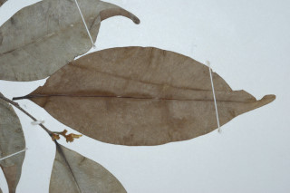
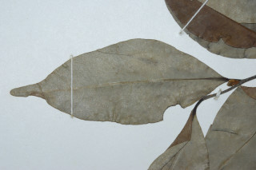
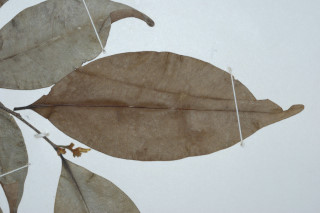
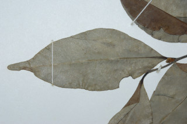

Trees, up to 25 m tall.
25ಮೀ ವರೆಗೆ ಬೆಳೆಯುವ ಮರಗಳು.
25 മീറ്റര് വരെ ഉയരമുള്ള മരങ്ങള്.
மரம், 25 மீ. உயரம் வரை வளரக்கூடியது.
Trunk buttressed, bark thin, smooth.
ಕಾಂಡ ಆನಿಕೆ ಸಮೇತವಿರುತ್ತವೆ ; ತೊಗಟೆ ತೆಳು ಹಾಗೂ ನಯವಾಗಿರುತ್ತವೆ.
വപ്രമൂലത്തോടു കൂടിയ തായ്ത്തടിയും, നേര്ത്തതും, മിനുസമാര്ന്നതുമായ പുറംതൊലിയും.
தாங்கு வேர்களுடையது (பட்ரஸ்டு), மரத்தின் பட்டை மெலிதானது, வழுவழுப்பானது.
Branchlets subglabrous, terete, lenticellate.
ಕಿರುಕೊಂಬೆಗಳು ಉಪ- ರೋಮರಹಿತವಾಗಿರುತ್ತವೆ ಮತ್ತು ಗುಂಡಾಕಾರವಾಗಿದ್ದು ವಾಯುವಿನಿಮಯ ಬೆಂಡುರಂಧ್ರ ಸಹಿತವಾಗಿರುತ್ತವೆ.
ശ്വസന രന്ധ്രങ്ങളുള്ള, ഉരുണ്ട, ഉപ അരോമിലമായ ഉപശാഖകള്
இலைகள் தனித்தவை, மாற்றுஅடுக்கமானவை, இருநெடுக்கு வரிசையிலையடுக்கம் (டைஸ்டிக்கஸ்); இலைக்காம்பு 0.5-1 செ.மீ, நீளமானது, குறுக்குவெட்டுத் தோற்றத்தில் பிளேனோகான்வக்ஸ்; இலை அலகு 7-9 X 2.5-4 செ.மீ., பொதுவாக நீள்வட்டம், சிலவற்றில் குறுகிய நீள்வட்டம், அலகின் நுனி அதிக்கூரியது மற்றும் முனை மழுங்கியது, அலகின் தளம் கூரியது, சார்ட்டேசியஸ், உரோமங்களற்றது, மையநரம்பு மேற்பரப்பில் அலகின் பரப்பைவிட சிறிதளவு பள்ளமானது; இரண்டாம் நிலை நரம்புகள் 6-8 ஜோடிகள்; மூன்றாம் நிலை நரம்புகள் வலைப்பின்னல் அமைப்பு கொண்டது.
Leaves simple, alternate, distichous; petiole 0.5-1 cm long, planoconvex; lamina 7-9 x 2.5-4 cm, usually elliptic, sometimes narrow elliptic, apex acuminate with blunt tip, base acute, chartaceous, glabrous; midrib slightly canaliculate above; secondary_nerves 6-8 pairs, slender; tertiary_nerves admedially_ramified.
ಎಲೆಗಳು ಸರಳ, ಪರ್ಯಾಯ ವ್ಯವಸ್ಥೆಯಲ್ಲಿದ್ದು ಕಾಂಡದ ಎರಡೂ ಕಡೆ ಎದುರು ಬದರಿನ ಲಂಬ ಸಾಲಿನಲ್ಲಿರುವ ಮಾದರಿಯಲ್ಲಿರುತ್ತವೆ. ಎಲೆತೊಟ್ಟು 0.5 ರಿಂದ 1 ಸೆಂ.ಮೀ. ಉದ್ದವಿರುತ್ತದೆ. ಎಲೆಪತ್ರದ ಗಾತ್ರ 7-9 × 2.5-4ಸೆಂ.ಮೀ. ಸಾಮಾನ್ಯವಾಗಿ ಅಂಡಾಕೃತಿಯಲ್ಲಿರುತ್ತದೆ; ತುದಿ ಮೊಂಡು ಅಗ್ರವುಳ್ಳ ಕ್ರಮೇಣ ಚೂಪಾಗುವ ಮಾದರಿಯಲ್ಲಿದ್ದು ಬುಡ ಚೂಪಾಗಿರುತ್ತದೆ. ಎಲೆಯ ಮೇಲ್ಮೈ ಕಾಗದವನ್ನು ಹೋಲುವಂತಹವು ಮತ್ತು ರೋಮರಹಿತ; ಮಧ್ಯನಾಳ ಎಲೆಪತ್ರದ ಮೇಲ್ಭಾಗದಲ್ಲಿ ತುಸು ಕಾಲುವೆ ಗೆರೆಗಳನ್ನು ಹೊಂದಿರುತ್ತದೆ ; ಎರಡನೇ ದರ್ಜೆಯ ನಾಳಗಳು 6 ರಿಂದ 8 ಜೋಡಿಯಾಗಿದ್ದು ತೆಳುವಾಗಿರುತ್ತವೆ ; ತೃತೀಯ ದರ್ಜೆಯ ನಾಳಗಳು ಜಾಲಬಂಧ ನಾಳಸ್ವರೂಪದವು.
ലഘുവായ ഇലകള്; ഏകാന്തരക്രമത്തില്, തണ്ടിന്റെ ഇരുഭാഗത്ത് മാത്രമായടുക്കിയിരിക്കുന്നു. ഏതാണ്ട് ഉരുണ്ടിരിക്കുന്ന ഇലഞെട്ടിന് 0.5 മുതല് 1 സെ.മീ. വരെ നീളം; പത്രഫലകത്തിന് 7 മുതല് 9 സെ.മീ. വരെ നീളവും 2.5 മുതല് 4 സെ.മീ. വരെ വീതിയും, മിക്കവാറും ദീര്ഘവൃത്താകൃതിയും, ചിലപ്പോള് വീതി കുറഞ്ഞ ദീര്ഘവൃത്താകാരമോ ആണ്, മുനപ്പില്ലാത്ത ദീര്ഘാഗ്രവും, പത്രാധാരം കൂര്ത്തതുമാണ്, കടലാസ് പോലത്തെ പ്രകൃതം, അരോമിലം; മുഖ്യസിര മുകളില് ചാലോടുകൂടിയതാണ്, നേര്ത്ത ദ്വിതീയ ഞരമ്പുകള് 6 മുതല് 8 വരെ ജോഡികളുാകും, ത്രിതീയ ഞരമ്പുകള് ജാലിക തീര്ക്കുന്നു.
மலர்கள் கொத்தாக இலைக்கோணங்களில் காணப்படுபவை, மிகச்சிறிய காம்புடையவை அல்லது காம்பற்றவை, அரக்கு, மலர் இதழ்கள், அடர்ந்த பின்னிய உரோமங்களுடையது.
Flowers axillary clusters, subsessile, brown, petals tomentose.
ಹೂಗಳು ಅಕ್ಷಾಕಂಕುಳಿನಲ್ಲಿ ಗುಚ್ಛಗಳಲ್ಲಿರುತ್ತವೆ. ಹೂಗಳು ತೀರಾಚಿಕ್ಕದಾದ ತೊಟ್ಟುಗಳನ್ನು ಹೊಂದಿದ್ದು ಕಂದು ಬಣ್ಣದಲ್ಲಿರುತ್ತವೆ. ಪುಷ್ಪಾದಳಗಳು ದಟ್ಟ ಮೃದು ತುಪ್ಪಳ ಸಮೇತವಿರುತ್ತವೆ.
തവിട്ടു നിറത്തിലുള്ള, ഉപഅവൃന്ത, പൂക്കള് കക്ഷങ്ങളില് കൂട്ടമായുണ്ടാകുന്നു, ദളങ്ങള് കനത്ത രോമാവൃതമാണ്.
கொத்தான பல விதைகளுடைய முழுச்சதைகனி (பெர்ரி), தலைகீழ் முட்டை வடிவம், 3 X 2 செ.மீ., மிகச்சிறிய காம்புடையது.
Cluster of several seeded berries, obovate, 3 x 2 cm, subsessile.
ಬೆರ್ರಿಗಳು ಅನೇಕ ಬೀಜಗಳನ್ನೊಳಗೊಂಡು ಗುಚ್ಛಗಳಲ್ಲಿರುತ್ತವೆ. ಬೆರ್ರಿಗಳು ತೀರಾಚಿಕ್ಕದಾದ ತೊಟ್ಟು ಹೊಂದಿದ್ದು 3 × 2 ಸೆಂ.ಮೀ. ಗಾತ್ರದವು ಹಾಗೂ ಬುಗುರಿ ಆಕಾರದವು.
ധാരാളം വിത്തുകളുള്ള, 3 സെ.മീ. നീളവും 2 സെ.മീ. വീതിയുമുള്ള, ഉപഅവൃന്തവും, അണ്ഡാകാരത്തിലുള്ളതുമായ സരസഫലങ്ങള് കൂട്ടമായുണ്ടാകുന്നു.
 


